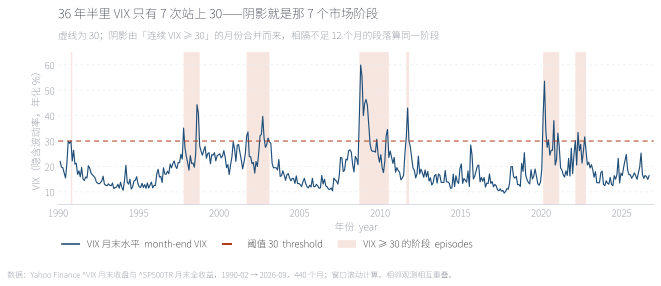
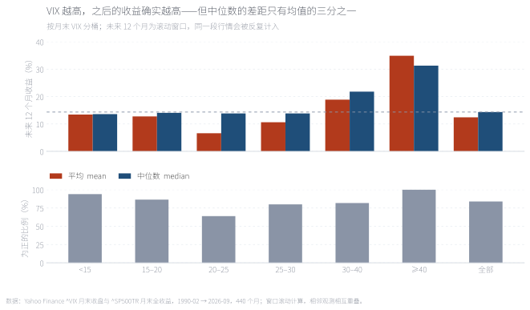
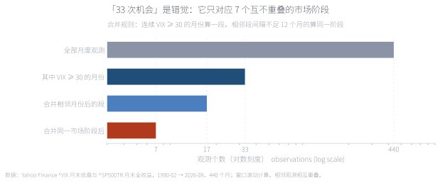
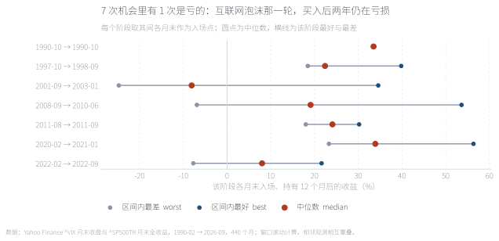
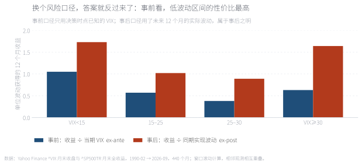
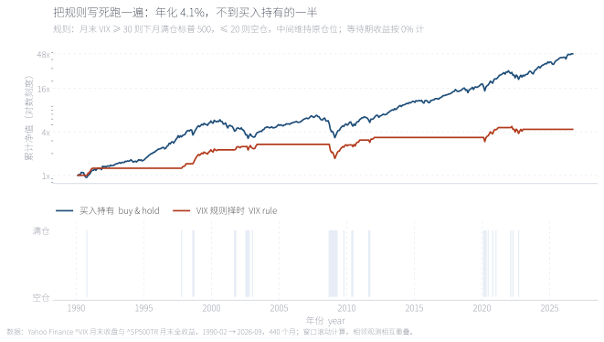
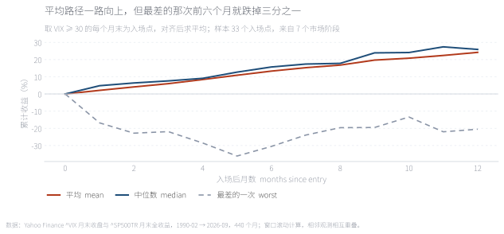

「别人恐惧我贪婪」是这个市场里流传最广的一句话，落到指标上就变成一条可执行的规则：VIX 高的时候买入。本文用 1990-02 至 2026-09 共 440 个月的月度数据检验这句话。在收益层面它站得住——VIX ≥ 30 之后的 12 个月，标普 500 全收益的中位数是 21.8%，明显高于低波动区间的 13.6%；但代价在样本上：36 年半里这样的机会只有 7 个互不重叠的市场阶段，其中一次（2001–2003）买入后两年仍在亏损。我们的结论是：VIX 是一个有用的风险定价读数，不是一个可执行的入场信号。
关键词 VIX · 隐含波动率 · 方差风险溢价 · 择时 · 多资产配置 · 行为偏差
把「别人恐惧我贪婪」翻译成可检验的语言，需要先找到「恐惧」的度量。1993 年 Cboe 推出 VIX 之后，Whaley（2000）把它称作投资者恐惧指标（investor fear gauge），这个绰号流传至今，也把「VIX 高」与「该贪婪」在直觉上绑在了一起。但这两件事在逻辑上并不等价：VIX 高只说明市场为波动率保险付了更高的价格，它并不直接说明股票接下来会涨。
更麻烦的是，这句话有几种不同的读法，而它们的可检验性完全不同。读法一：VIX 高时买入，长期收益更高——这是一个可以用数据回答的问题。读法二：VIX 高时买入更安全——这与"高波动"直接矛盾，但很多人心里想的是这个。读法三：VIX 高时买入是更好的风险调整后选择。本文只回答第一和第三个，因为它们可以被证伪。
在进入数据之前，先看这句话碰到的是什么形状的东西。下图把 1990 年以来的 VIX 全序列画了出来，并把所有「VIX ≥ 30」的时段标成阴影。

阴影是 VIX ≥ 30 的月份合并后的结果，一共 7 段。它们不是均匀出现的：1997–2003 有 3 段，2008–2011 有 2 段，2020 与 2022 各 1 段。也就是说，这不是一个每年都会给你机会的规则，而是一个十年才出现两三次的事件。这个形状本身就预示了后面所有统计问题。
The shaded bands are the seven episodes where VIX stayed at or above 30. They are not evenly spaced: three fall between 1997 and 2003, two between 2008 and 2011, and one each in 2020 and 2022.
来源：Yahoo Finance，^VIX 月末收盘。
VIX 不是"恐慌指数"这个绰号所暗示的情绪读数，它是一个价格。它由一篮子标普 500 期权价格反推得到，含义是：期权市场对未来 30 天年化波动率的定价。换句话说，它衡量的是市场愿意为波动率保险支付多少钱，而不是市场有多害怕。
这个区别在资产定价上有确切含义。Carr 与 Wu（2009）以及 Bollerslev、Tauchen 与 Zhou（2009）记录了一个稳健的事实：隐含波动率在平均水平上高于随后实现的波动率，这个差额被称为方差风险溢价（variance risk premium）。卖方卖出波动率保险承担了尾部风险，因此长期获得这笔溢价。这带来一个直接的推论：「VIX 高」可能只是意味着保险当期卖得贵，而"未来会更波动"与"未来会涨"是两件完全不同的事。
这也解释了为什么"VIX 高就该贪婪"听起来总是对、做起来总是难：如果 VIX 高是因为保险变贵了，那么买股票的理由是"保险费补偿变厚"；如果 VIX 高是因为未来真的更波动，那么买股票的理由就完全不存在。数据能告诉我们的，只能是在过去这 36 年半里，哪一种情况更常见。
样本为 ^VIX 月末收盘与标普 500 全收益指数月度收盘，1990-02 至 2026-09 共 440 个月。对每一个月末时点 ，记下当期 VIX 水平，并计算此后 12 个月的累计总收益，再把所有时点按 VIX 水平分桶。事前的单位波动收益定义为 ——分子是未来 12 个月收益，分母是决策时点已经知道的 VIX 水平；用未来实际发生的波动做分母的口径我们称为事后口径，两者会在第 05 节对照。

上图左右两根柱分别是均值与中位数，灰虚线是全体样本的中位数 14.3%。两个读数讲的是不同的故事：均值随 VIX 上升的幅度远大于中位数——VIX ≥ 40 那一组的均值被少数几次极端反弹拉高。下图的"为正的比例"则显示，高 VIX 并不等于更稳：胜率最高的是最平静的那一档。
Bars compare mean and median 12-month forward returns by VIX bucket. The mean rises much faster than the median, which is what a handful of extreme rebounds would do to a small sample.
来源：本文计算，数据见附录 A。
| 持有窗口 | VIX <15 | 15–20 | 20–25 | 25–30 | 30–40 | ≥40 |
|---|---|---|---|---|---|---|
| 未来 1 个月 | 1.2 | 1.4 | 1.4 | 1.0 | 4.7 | 6.4 |
| 未来 3 个月 | 3.0 | 3.5 | 3.3 | 5.6 | 7.6 | 11.8 |
| 未来 6 个月 | 6.2 | 6.0 | 5.3 | 9.0 | 13.3 | 25.9 |
| 未来 12 个月 | 13.6 | 14.1 | 13.8 | 13.8 | 21.8 | 31.3 |
数值为中位数，单位 %。加粗列为 VIX ≥ 30 的两档。最值得注意的是非单调：20–25 这一档的中位数不但不高于低波动档，反而是整张表里偏低的一行——"半恐慌"既没有高赔率，也没有低波动。
上一节的结论有一个前提没被检验：那 33 个高 VIX 观测是独立的吗？答案是不独立。VIX 是高度持续的序列，一个月高，下个月通常还高。把连续月份合并成一段，33 个月变成 17 段；再考虑现实中相隔不到一年的两段其实是同一轮市场阶段，17 段进一步合并成 7 段。也就是说，在 36 年半的历史里，"VIX 站上 30"这个条件一共只发出过 7 次独立的信号。

横轴为对数刻度。这一步不是在"剔除数据"，而是在纠正一个统计假设：把重叠窗口当成独立观测，会系统性地夸大显著性。任何声称"VIX 择时被验证过 33 次"的说法，实际证据强度只相当于 7 次。
The x-axis is logarithmic. This is not data trimming but a correction of the independence assumption: overlapping windows are not separate draws.
来源：本文计算。

每一行是一个阶段，圆点是该阶段的 12 个月收益中位数，横线是该阶段最好与最差。2001-09 → 2003-01 是唯一整体亏损的阶段：在那 7 个月里的任何月末入场，一年后的中位收益是 −8.1%。如果你在 2001 年秋天看到 VIX 突破 30 而加仓，接下来两年你会同时承受浮亏和"这个规则很灵"的信念崩塌。
One row per episode; the dot is the median 12-month outcome for start dates inside that episode, the line spans best to worst. The dot-com episode is the only one whose median is negative.
来源：本文计算。
| 阶段 | 月数 | 峰值 VIX | 峰值所在月 | 期间入场后 12 个月中位收益（%） |
|---|---|---|---|---|
| 1990-10 → 1990-10 | 1 | 30.0 | 1990-10 | 33.5 |
| 1997-10 → 1998-09 | 3 | 44.3 | 1997-10 | 22.4 |
| 2001-09 → 2003-01 | 7 | 39.7 | 2001-10 | -8.1 |
| 2008-09 → 2010-06 | 11 | 59.9 | 2008-10 | 19.1 |
| 2011-08 → 2011-09 | 2 | 43.0 | 2011-09 | 24.1 |
| 2020-02 → 2021-01 | 6 | 53.5 | 2020-03 | 33.9 |
| 2022-02 → 2022-09 | 3 | 33.4 | 2022-02 | 8.0 |
"月数"为该阶段内 VIX ≥ 30 的月份数，标红的一行是唯一的负数——它同时说明峰值 VIX 与后续收益之间没有稳定关系：峰值最高的 2008-10（59.9）之后是此后两年里最好的一段，峰值最低的 1990-10 之后也不错，而峰值中等、由衰退驱动的 2001–2003 反而是唯一的亏损案例。
到此为止，我们一直在比较收益，没有比较代价。高 VIX 之后当然可能涨得更多——如果它同时意味着更大的波动，那么"更多收益"就不是优势，而是风险的补偿。这需要把风险放在分母上，而分母有两种取法，它们给出不同的答案。

事前口径（蓝）只用决策时点已知的 VIX：低波动区间的单位波动收益最高（1.05），高 VIX 区间只有 0.63，中间地带最差。含义是——当你为波动率支付的保险费变贵时，你并没有得到相称的补偿。事后口径（橙）用未来实际发生的波动：两端接近（1.73 与 1.64），中间地带最差（0.89–1.02）。两个口径唯一的共识是：最差的从来不是高 VIX，而是"中等恐慌"。
Blue uses only information known at the decision date (VIX itself); orange uses the volatility that actually followed. Only the middle buckets look bad under both.
来源：本文计算。单位波动收益 = 未来 12 个月收益 ÷ 风险度量，未扣无风险利率。
前面都是统计描述。如果这句话真能赚钱，它应该能通过一个更严格的检验：把它写成一条机械规则，加上真实的约束（不能做空、不能加杠杆、等待期没有利息收入），然后看它到底跑不跑得赢什么都不做。规则定义如下：月末 VIX ≥ 30 时，下个月满仓标普 500；VIX ≤ 20 时，下个月空仓；两者之间维持原有仓位。换手发生在越过阈值的那一个月。

上图是对数刻度净值，下图是持仓状态。规则的累计净值只有买入持有的一小部分：年化 4.1% vs 11.2%，单位波动收益 0.42 vs 0.76。原因在下面那张图里一目了然——它只在 22.7% 的月份里持仓。这条规则没有亏钱，它只是把绝大部分上涨让了出去；而它避开的下跌，并不足以抵消被错过的时间。
Annualised return 4.1% versus 11.2% for buy-and-hold; return per unit of volatility 0.42 versus 0.76. The lower panel shows why: the rule is invested only 22.7% of the time.
来源：本文回测，不扣交易成本与税费。等待期按 0% 计息，这对择时策略偏有利。
拖动滑块改变阈值。上图的竖线是触发点落在价格曲线上的位置，下图的柱是每次触发之后 12 个月的收益。有三个值得亲手试的位置：把阈值降到 20，触发月数从 33 涨到 161，但独立阶段只从 7 增到 8——多出来的样本几乎全是同一轮行情的重复计数；升到 40，只剩 4 个阶段和 11 个月，中位收益漂亮到 31.3%，但那个数字已经没有统计意义；留在 30，得到的是本文正文用的那一组。这就是这类规则最难说清的地方：你想让结论更好看，只需要把阈值往上推。
Drag the threshold. Lower values trigger far more often but thicken the left tail of outcomes; higher values leave too few observations to support any conclusion.
来源：本文计算，数据见附录 A。
如果高 VIX 之后平均收益确实更高，机制是什么？最容易想到的解释是"恐慌会消退"。这个解释对了一半——消退的确实是波动率。把每个 VIX ≥ 30 的月末对齐，看此后 12 个月的平均路径：VIX 从 37.7 一路回落到 21.4，而价格的路径远不如它稳定。

平均与中位路径都稳定向上，最终落在 24.2% 与 25.9%——与前面分桶统计一致。但虚线（最差的一次）显示，前六个月可以跌掉三分之一，而且它在第 12 个月仍未回到正收益。这就是这个策略的真实体验：平均意义上它有效，但在七次机会里，有相当概率你会经历一次长达两年的等待。VIX 从 37.7 回到 21.4 是波动率的均值回归，它不等于价格的均值回归。
Mean and median paths climb steadily to roughly 24–26%. The worst single path loses a third of its value within six months and is still underwater at month twelve. VIX reverting from 37.7 to 21.4 is volatility mean reversion, not price mean reversion.
来源：本文计算，对齐 33 个 VIX ≥ 30 的入场点（来自 7 个市场阶段）。
把三层的结论放在一起，可以得到一个比原命题更精确的表述。收益层面，高 VIX 之后的中位收益确实更高（21.8% vs 13.6%），这一点在 1、3、6、12、24 个月的窗口上都成立，不是某一种口径的产物。证据层面，支撑它的独立样本只有 7 个，其中一个是亏损的；任何把 33 当样本量、更不用说把 440 当样本量的说法，都在系统性地夸大证据强度。风险调整层面，如果以决策时点可获得的信息衡量，高 VIX 区间的性价比反而更低。
因此更实用的结论是：不要用 VIX 决定方向，用它决定风险预算。VIX 是一个高质量的风险定价读数——它告诉你波动率保险有多贵、市场对未来波动的共识是多少，这些信息可以用来调整仓位规模、设定止损距离、给风险预算定标；它不告诉你下个月涨还是跌。把波动率当旋钮而不是当成预言，是这 36 年半数据给出的、最稳健的那部分经验。
最后要诚实地说明这份结论的边界。样本只有一个市场、一个 36 年半的窗口，其中 1990 年代以后的低利率环境可能系统性地压低了 VIX 的中枢；月度取样会漏掉月内的极端波动；未来收益窗口高度重叠。如果未来出现一轮利率中枢更高、波动率定价更贵的周期，第 05 节的"事前口径"结论很可能被改变——而那正是这篇文章最该被质疑的地方。
Full English version below.
Question. "Be greedy when others are fearful" is one of the most repeated lines in investing. Reduced to a tradeable rule it becomes: buy equities when VIX is high. We test that rule on 440 monthly observations of the ^VIX month-end level and the S&P 500 total return index from February 1990 to September 2026.
Result 1 — it holds on returns. The median 12-month forward return is 21.8% after VIX ≥ 30, against 13.6% after VIX < 15. The pattern is not monotone, however: the 20–25 bucket is the weakest row in the table, so "half-fear" is neither a high-payoff nor a low-volatility state.
Result 2 — the sample is tiny. The 33 months with VIX ≥ 30 collapse to 17 non-overlapping runs once consecutive months are merged, and to 7 market episodes once runs less than twelve months apart are treated as one. One of the seven — September 2001 to January 2003 — has a negative median outcome of −8.1%. Every claim of the form "this signal was tested 33 times" actually rests on seven independent draws.
Result 3 — risk adjustment reverses it. Dividing the forward return by the VIX level known at the decision date, the low-volatility bucket earns the most per unit of risk (1.05) and the VIX ≥ 30 bucket only 0.63. Using realised forward volatility instead brings the two extremes close together (1.73 and 1.64); under both measures the middle buckets are the worst.
Result 4 — the rule loses to doing nothing. A mechanical rule — fully invested when month-end VIX ≥ 30, in cash below 20, unchanged in between — returns 4.1% annualised against 11.2% for buy-and-hold, with 0.42 versus 0.76 return per unit of volatility. It is invested only 22.7% of the time. It avoids drawdowns, but the missed exposure costs far more.
Mechanism. Aligning on every month-end with VIX ≥ 30, the average VIX path falls from 37.7 to 21.4 over the following year, while the average price path climbs to 24.2% and the worst single path is still down about 20% at month twelve. VIX mean reverts because volatility clusters; prices do not inherit that property.
Implication. Use VIX as a risk-pricing input — position sizing, risk budgeting, the cost of insurance — not as a directional signal. Limitations: one market, one 36-year window, monthly sampling, and heavily overlapping forward windows.
数据。^VIX 月末收盘（1990-02 → 2026-09，440 个月）与标普 500 全收益指数 ^SP500TR 月末收盘，均来自 Yahoo Finance 公开行情接口，访问日期 2026-10-03。VIX 序列取月末收盘值，而非月内最高或月均，以保证决策时点不使用未来信息。
做法。对每一个月末 t 记录 VIX_t，并计算未来 h ∈ {1,3,6,12,24} 个月的总收益 P(t+h)/P(t) − 1。按 VIX 水平分为 6 档统计中位数、均值、分位数与为正比例。「独立阶段」的定义是：先把 VIX ≥ 30 的连续月份合并成段，再把相邻间隔不足 12 个月的段落视为同一阶段。
两个风险口径。事前口径的分母是决策时点已知的 VIX_t；事后口径的分母是该窗口内实现波动率的年化值（月度收益标准差 × √12）。两者都不是严格的夏普比率：未扣无风险利率，也没有考虑仓位可调整。
未计入。交易成本、税费、股息再投资的时间差，以及择时策略在空仓期的现金收益（本文按 0% 计，这对择时策略偏有利）。
代码。tools/fetch_vix_raw.py（取数）、tools/make_vix_data.py（全部统计）、tools/make_vix_figs.py（八张图）、tools/make_vix_note.py（本页与交互图）。固定输入可完全复现。
一、窗口重叠。滚动 12 个月的窗口里，相邻两个观测共享 11 个月的数据。这会让统计量的有效样本量远小于观测个数，也让"显著性"变得不可信。本文用"合并市场阶段"的方式给出一个保守的下界。
二、月末取样。VIX 在月内的波动可能远大于月末水平。用月末值是为了避免前视偏差，代价是漏掉了月内的极端情形——1987 年 10 月、2010 年闪崩这类事件在月频数据里几乎看不到。
三、单一市场与单一时代。样本只有标普 500，且 1990 年以后的利率下行环境可能系统性地压低了 VIX 中枢。把同样的规则放到日经或欧洲股指上，结论未必一致；这一点本文没有做，是明确的局限。